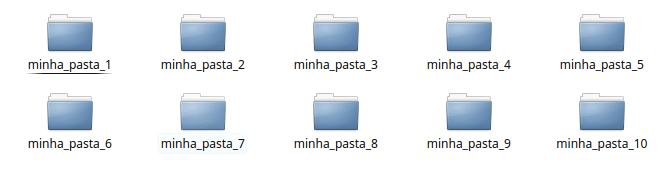
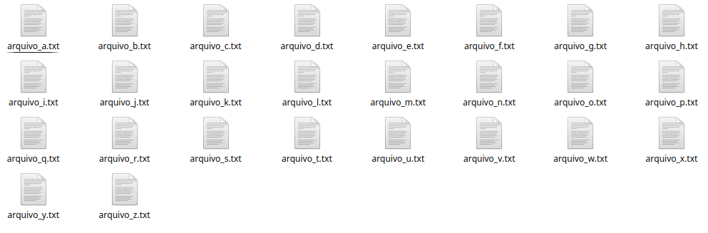
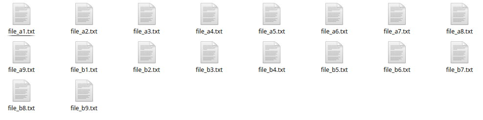

Olá pessoal, tudo bem? Todo programador linux sabe como o uso do terminal pode ser uma ajuda insubstituível na realização de algumas tarefas. Neste post eu irei compartilhar algumas coisa que descobri usando o terminal.
Exemplo 1
Para começar, quando desejamos criar um diretório pelo terminal, usamos o seguinte comando:
mkdir nome_do_diretorio
Algo muito prático. Mas e se precisarmos criar 10 diretórios com o seguinte formato de nome: minha_pasta_1, minha_pasta_2, minha_pasta_3, ..., minha_pasta_10.
Certamente a realização dessa tarefa pelo ambiente gráfico é algo muito cansativo e lento. Então vamos fazer uso do terminal do linux para resolver essa situação. Você talvez não saiba (eu pelo menos não sabia.. hehe), que o comando mkdir aceita expressões regulares. Então, vamos usar-las para resolver nosso problema.
mkdir minha_pasta_{1-10}
Dentro da {}, nós inserimos a expressão regular desejada. A expressão {1..10} irá criar 10 diretórios seguindo o padrão de nomes desejado.

Abaixo temos outros exemplos de uso das expressões regulares. Trata-se de um comando útil para quando desejamos criar um grande numero de arquivos cujo nomes seguem uma determinada regra.
Para deletarmos os diretorios que acabamos de criar também podemos usar a mesma expressão regular.
rm -rf minha_pasta_{1-10}
Exemplo 2
Vamos criar 100 arquivos com o seguinte formato de nome: file_”numero_do_arquivo”.txt. Basta no terminal, usarmos o comando touch.
touch file_{1-100}.txt
Apos executarmos o comando, 100 arquivos do tipo .txt serão criados seguindo a regra de nome que desejamos.
Exemplo 3
Vamos criar um conjunto de arquivos cujos nomes seguem o formato: file_a.txt, file_b.txt, … file_z.txt. Basta executar o seguinte comando no terminal:
touch file_{a-z}.txt
Resultado:

Exemplo 4
Vamos criar um conjunto de arquivo cujo nomes seguem o seguinte formato: file_a1.txt, file_a2.txt, file_a3.txt, …, file_a9.txt, file_b1.txt, file_b2.txt, …, file_b9.txt. Basta executar o seguinte comando no terminal:
touch file_{a-b}{1-9}.txt
A seguir temos os arquivos que foram criados pela execução da expressão regular.

Como podemos perceber, dentro da {} podemos adicionar qualquer expressão regular. Mais um exemplo com a criação de diretórios.
Exemplo 5
Vamos criar um conjunto de 10 diretórios com o nome no formato: folder_10, folder_11, folder_12, folder_19, folder_20, folder_21, ..., folder_29, ..., folder_90, ..., folder_99. Basta executar o seguinte comando no terminal:
mkdir folder_{1-9}{0-9}
É isso pessoal. Espero que a dica seja útil para vocês. Até o próximo post.